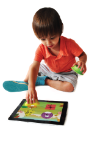
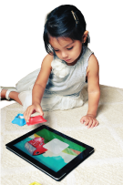

La filosofia di apprendimento di Tiggly:
Alla Tiggly, progettiamo giocattoli che interagiscono con le app di apprendimento, perché crediamo che ci sia una possibilità di apprendimento potente insita nella combinazione di gioco fisico e digitale.
Il solo gioco digitale ha molti vantaggi dalla sua parte: una piattaforma digitale in grado di adattarsi alle capacità e le conoscenze di un bambino, può fornire un feedback, una guida e una struttura mirata ai bisogni del bambino, è in grado di monitorare le prestazioni di un bambino e valutare il suo sviluppo fornendo rapporti immediati sui progressi di apprendimento ai suoi genitori e insegnanti, e può essere a volte anche più divertente di giocare con una macchinina o un orsacchiotto!
Tuttavia, ciò che manca in un ambiente digitale è l'interazione importante che viene fornita con il gioco con oggetti reali: afferrare oggetti in mano, tenerli, posizionarli in base a un obiettivo, e in caso contrario manipolarli. Settanta anni di ricerche sullo sviluppo dei bambini, dall'educazione del 20° secolo e ai rivoluzionari in psicologia come Maria Montessori e Jean Piaget, agli scienziati cognitivi di oggi, ci dicono che il gioco fisico è estremamente importante per il corretto sviluppo infantile. Ciò che è evidente è che il gioco con gli oggetti favorisce lo sviluppo delle capacità motorie e migliora la coordinazione oculo-manuale. Ciò che non è così ovvio è che il gioco fisico aiuta anche la cognizione e la memoria.
|  |  |
Tenere un oggetto in mano stabilizza la testa del vostro bambino e focalizza la sua attenzione, mentre egli esplora l'oggetto visivamente e manualmente. Avete mai notato che un bambino di 2 anni si guarda costantemente intorno, muovendo la testa in tutte le direzioni? Ma appena è impegnato con un giocattolo, tutta la sua attenzione è focalizzata su quel giocattolo. L'attenzione verso gli oggetti è una cosa positiva, perché quando i bambini si concentrano su qualcosa, non c'è una migliore occasione per loro di imparare il nome dell'oggetto e di sviluppare le proprie competenze linguistiche. Ma non si tratta solo di apprendere i nomi: si tratta di imparare molto a proposito del mondo che li circonda. Fare attenzione ad oggetti, esplorarli visivamente e manualmente, agire su di loro e ispezionare i risultati delle nostre azioni intorno a ciò che ci circonda è la base di ogni apprendimento.
Quello che è importante per l'apprendimento è coinvolgere tutti i nostri sensi. Prendete un cerchio ad esempio. Quando una bambina guarda un cerchio su uno schermo, lei può vedere la forma. Ma quando lei afferra e tiene un giocattolo circolare in mano, lo può toccare e sentire la sua rotondità. Si accorge che lei può far rotolare il suo giocattolo circolare, ma non quello triangolare. Scopre che il cerchio sembra sempre lo stesso, quando lo gira, ma il triangolo appare diverso quando lo ruota. L'interazione manuale con blocchi fisici aiuta a capire che non solo un cerchio e un triangolo hanno un aspetto diverso, ma hanno anche diverse proprietà e possono essere manipolati in modi diversi. Si tratta di un primo "momento aha": "Ecco perché le ruote sono rotonde e non triangolari!"
Tuttavia, per quanto grande sia un triangolo o un blocco circolare, non può mai parlare al vostro bambino. Il vostro bambino può giocare con un blocco per ore e ore, esplorarlo in tutte le direzioni e manipolarlo in molti modi, ma non può mai conoscere il nome della sua forma. Può richiedere anche più tempo per lui capire che se si mette insieme due triangoli si può fare un quadrato, o che si può disegnare una mucca con due quadrati!
Ecco dove entrano in scena le app educatrici progettate da Tiggly.
Nel nostro mondo digitale, il cielo è il limite per l'immaginazione. Un bambino può catturare stelle o disegnare cerchi in un oceano per fare un cavalluccio marino o un delfino. Può mettere insieme un cerchio e due quadrati per disegnare un elefante in una giungla misteriosa. Il triangolo sullo schermo potrebbe scherzosamente dirgli: "Sono un triangolo! Scommetto che tu non lo sei!"
Ed è per questo che pensiamo che ci sia un'immensa opportunità educativa quando il gioco fisico e il gioco digitale si fondono insieme. Il vostro bambino riceve tutti i vantaggi di interagire con oggetti reali, mentre la sua immaginazione è stimolata in un contesto digitale. Riceve un'istruzione adeguata circa il suo apprendimento e gli sono offerte nuove sfide man mano che sviluppa le sua capacità intellettive. In questo modo, Tiggly rivisita il gioco, colmando il divario tra gli standard educativi stabiliti e la nuova frontiera digitale.